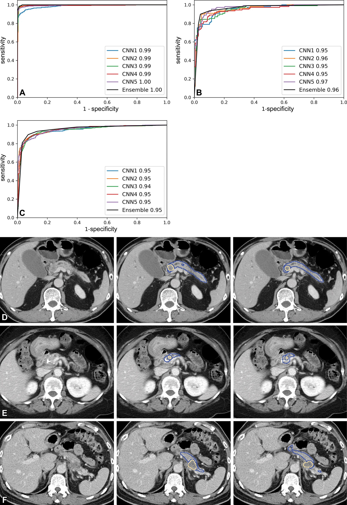

全國多中心驗證：AUC 0.95
依實際文獻（Radiology 2023 全國多中心 1,473 例）繪製的 ROC 曲線——在 <2cm 的小腫瘤偵測上，PANCREASaver® 達到 0.95 的曲線下面積。

來源：Radiology (2023) 全國多中心驗證（n=1,473）｜PubMed 原文 ↗
每一項數字，都有出處
五篇國際期刊、九項大獎、兩地法規認證——PANCREASaver® 用可驗證的證據說話。
國際期刊背書
5 篇期刊論文，發表於 Lancet Digital Health、Radiology 等頂尖期刊——由台大醫院團隊主導的真實臨床驗證。
查看 5 篇論文美國 FDA 突破性醫材
獲 FDA Breakthrough Device Designation，肯定其為「可顯著改善致命疾病早期偵測」的創新技術。
台灣 TFDA 許可
衛部醫器製字第007946號——台灣第一個獲許可的胰臟癌 AI 輔助偵測醫材。
智慧財產權布局
台灣與美國共 10 件發明專利（台 6 美 4），採「系統級＋方法級」雙重寫法，涵蓋演算法、影像處理與臨床工作流程。
查看 10 件專利9 項國家級肯定


從基礎研究到臨床照護
台大王偉仲教授與台大醫院廖偉智教授團隊，啟動早期胰臟癌影像診斷 AI 研究
台大研究團隊展開多中心臨床驗證
仲智數位健康成立，技術移轉商轉
RSNA Margulis Award 台灣首獲
美國 FDA 突破性醫材認定；TFDA 衛部醫器製字第007946號
部署醫學中心、區域醫院與健檢中心，累積 2000+ 人次
發表的每一步
Lancet Digital Health
AI 胰臟癌早期偵測多中心驗證研究
Radiology
深度學習於 CT 胰臟病灶偵測之應用
其他國際期刊
共 5 篇，涵蓋演算法、臨床驗證與工作流程
與現有系統無縫整合
從評估到上線，四個步驟，我們全程陪同。
需求評估
了解您的影像設備、資訊系統與臨床流程，確認導入範圍。
系統整合
與 PACS／RIS 介接，AI 判讀結果自動回傳，放射科工作流程零斷點。
驗證與訓練
提供放射科醫師與技術人員教育訓練，並以院內資料進行驗證。
上線與追蹤
正式上線後持續監控效能，定期提供統計報告與技術支援。